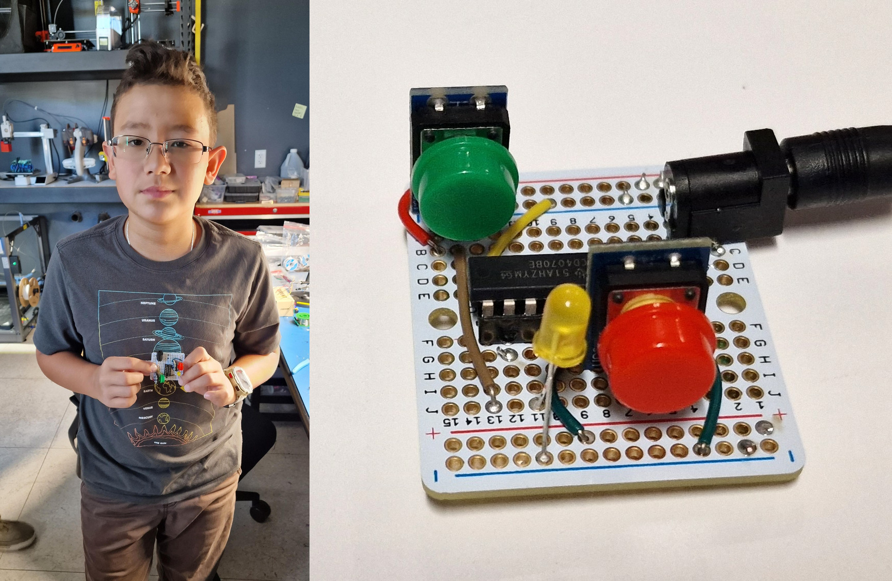

Практический путь к проектированию микросхем
Соберите логику.
Увидьте состояние.
Начните с логического элемента на макетной плате. Изучите регистры, арбитры и очереди, затем примените эти идеи в SystemVerilog и проектах на ПЛИС.

01 / Учиться
Две иллюстрированные инструкции
Исходные рисунки с пошаговыми пояснениями на русском и английском, проверенными номерами выводов DIP и первыми опытами.
Русская инструкция · Русская инструкция02 / Преподавать
61 упражнение
Объединённая программа с явным количеством логических микросхем, макетных плат, кнопок, индикаторов и проводов обоих типов.
Открыть каталог →Шесть наборов. Единая модель стоимости.
| Набор | Охват упражнений | Компоненты | Полная расчётная себестоимость | Рекомендуемая цена продажи | Файлы |
|---|---|---|---|---|---|
| Базовый | 12 упражнений | $33.02 | $49.29 | $90.00 | HTML · CSV |
| Полный | 61 упражнение | $117.48 | $166.97 | $295.00 | HTML · CSV |
| Автоматический сумматор с тремя FIFO | 1 упражнение | $34.52 | $53.76 | $95.00 | HTML · CSV |
| Арбитр round-robin для двух запросов | 1 упражнение | $16.90 | $29.96 | $55.00 | HTML · CSV |
| Конечные автоматы и индивидуальные задания на последовательности | 2 упражнения | $29.21 | $49.05 | $90.00 | HTML · CSV |
| Одна FIFO | 1 упражнение | $18.58 | $31.97 | $60.00 | HTML · CSV |
Эти документы доступны без интернета: храните эту папку вместе с каталогом assets . Изображения, оформление, поиск и генератор заданий по конечным автоматам работают без сервера. Для ссылок на поставщиков и исходные статьи нужен интернет.
Программа и исходные изображения: Юрий Панчул / Verilog Meetup. В эту адаптацию добавлены оценки комплектации и стоимости. Это не отчёт об испытаниях учебного оборудования.